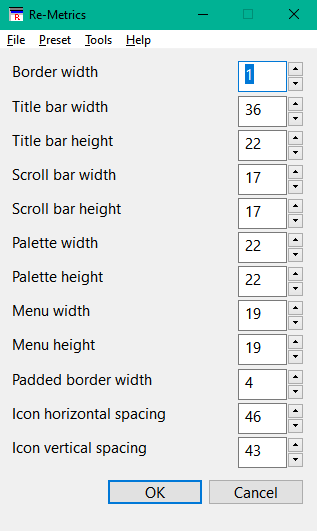

Run ReMetrics.exe.
This icon().
You will see below window.

When window displayed, you see window element name and size.
Please input size in textbox or change size clicking spin button.
When setting ended, press OK button.
You can change wildow element size.(Remark, OS adjust element size)
When you press cancel button, program exits without action.
Icon horizontal spacing and icon vertical spacing are enabled after "Auto arrange icons" or "Align icons to grid".
You can set window settings in command line
Re-Metrics window settings file name [-set]
You can create window settings file by this program.
If window settings file countains white space, surround file name in double quote.
If you specify -set after window setting file, program sets window settings from window settings file and program exits.
Use this option in batch file or launcher.
ReMetrics MySet.ini
ReMetrics "Your Settings.ini" -set